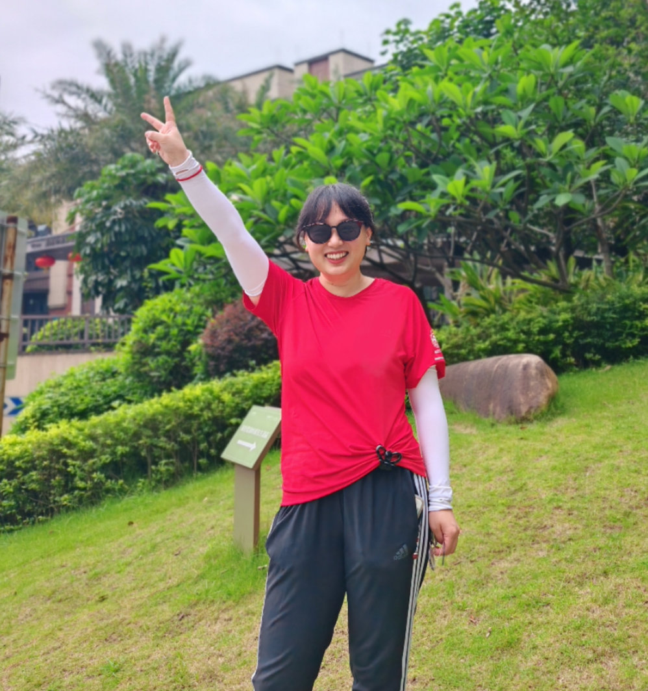
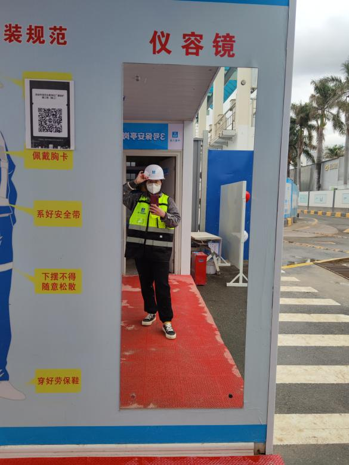
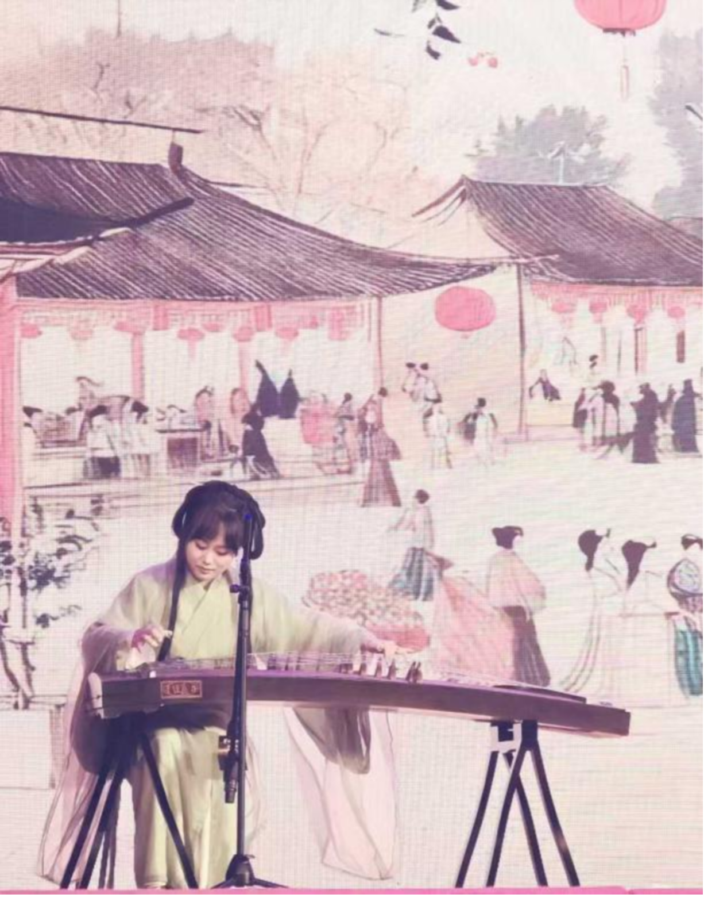
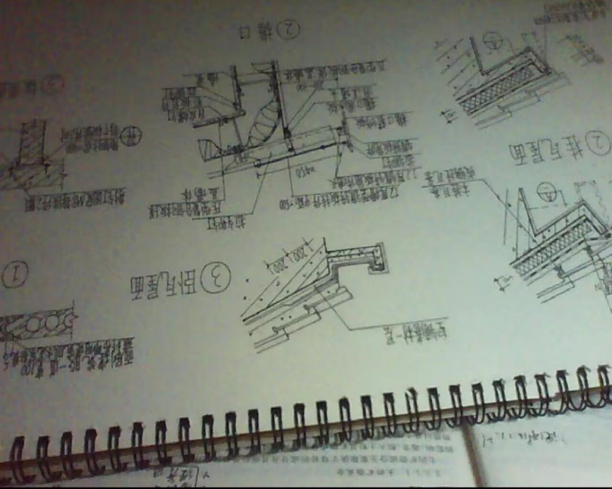
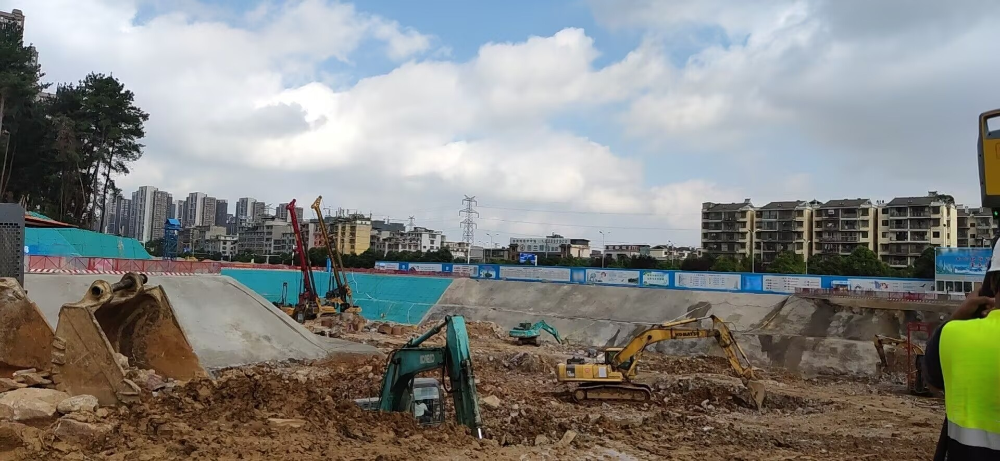
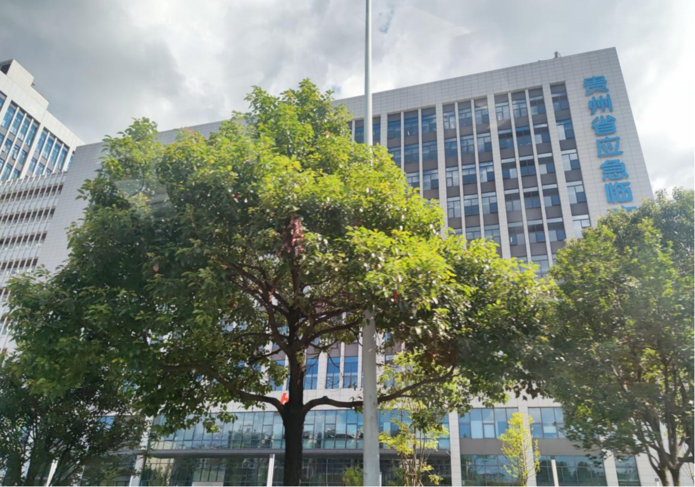
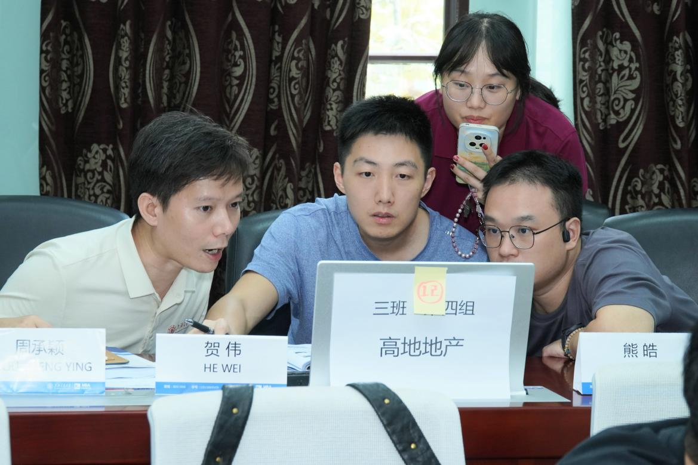
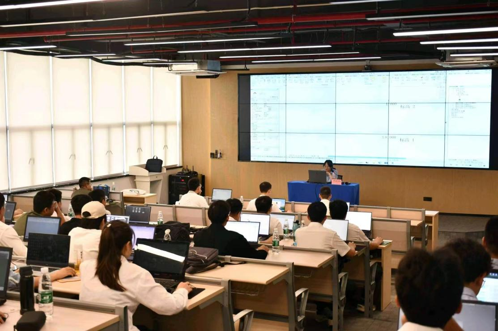

高级工程师 / （市政、水利、房建）一级建造师/BIM项目负责人 / 全国BIM大赛评委/三维建模培训讲师
在钢筋混凝土外寻找"图纸上没画的梁"
一个女土木工程师的破壁与重塑

在传统认知里，土木工程是一个属于男人的、尘土飞扬的、严谨但有点刻板的行业。但周承颖用她的职业经历展示了另一种可能。
白天，她戴着安全帽穿梭在脚手架和泥泞中，从结构设计员一路成长为BIM项目负责人；脱下工装，她细心打理好被安全帽压乱的长发，换上舒适的裙装，弹古筝、做烘焙、画油画。她曾执迷于图纸上毫米级的精准，深信技术为王，直到她亲手搭建的“无懈可击”的技术模型，在现实人性与规则博弈前，一触即溃。为了打破局限，她走进上海交通大学MBA的课堂，回溯自己走过的每一步。
这是一个关于跨界、重塑与持续成长的真实故事。
原来女生干这行，也能这么酷！
"周工，你一点不像女生，怎么想着来干土木。"
在建筑工地上，这是周承颖常听到的一句质疑。在以男性为主导的行业里，作为一个外表柔弱的女生，她必须用加倍的努力才能赢得尊重。工地的日子粗粝而真实，在这个暴晒与寒风交替的环境里，她跟着师傅爬脚手架、盯浇筑、改方案，摔倒了沾满一身泥浆，爬起来继续。


这种反差，不仅仅停留在表象上。曾经有一位学弟对她说：“颖姐，我了解了你的经历，才知道原来女生干这行也能这么酷。”
这种“酷”，源于她骨子里对专业的较真，以及在面对职业困境时，敢于“不破不立”的勇气。
“较真”的岁月：从图纸满分到走入泥泞
时间拨回2011年的秋天。19岁的周承颖站在贵州大学土木工程学院的门前，对“土木工程”四个字一知半解，以为未来就是画图和算量。
大学四年，她是同学眼中“和自己较劲”的人。测量学99分，土木工程制图100分。老师常说：“图纸上一条线的偏差，到了工地可能就是几吨材料的浪费。”这句话像钉子一样扎在她的心里。

2015年毕业后，她进入设计院，从结构设计员做起。遵义到贵阳的久长服务区，是她参与的第一个完整项目。深夜的办公室里，她对着CAD图上密密麻麻的标注，反复核对每一根梁的配筋，以为设计的尽头就是图纸的完美。
三年后，她做出了一个令所有人惊讶的决定：从设计单位转到施工单位。“图纸上的线条必须落地，才算真正的建筑。”带着这样的直觉，周承颖毅然决然走进了工地。
但现实很快给她浇了一盆冷水：从设计院到工地，她像闯入了一个平行宇宙，这里没有人争论规范和极限状态，大家更关心钢筋好不好绑、混凝土好不好浇。电脑前一张堪称完美的图纸，因未考虑现场脚手架搭设空间，导致返工，严重影响工期和进度。在那一刻，她的信仰开始动摇：技术上的“完美”，真的等于项目成功吗？
在工地那些年，她也慢慢理解了土木人“建成即离开”的特有宿命——他们筑起繁华，却从不留名。他们修医院、商场、学校，建成之前在泥泞里摸爬滚打；光鲜亮丽移交出去之后，他们悄然退场。
直到2020年初疫情爆发，看着新闻里同行们十天十夜建起火神山、雷神山医院，她忽然释怀：在关键时刻，土木人是这个国家的“脊梁”，是国家沉默而坚实的底座。用一砖一瓦守护着人们的衣食住行。
技术的困境：为什么最懂技术的人，推不动项目？
2018年，周承颖开始接触BIM（建筑信息模型）。在这个技术刚起步的阶段，她看到了三维模型能提前暴露冲突、避免返工的巨大潜力。
她自费报名培训班，白天跑工地，晚上建模型，两个月拿下证书。此后，她从BIM技术员成长为BIM项目负责人，主导了贵州省应急中心、深圳滨河水厂等多个大型项目的BIM落地。


然而，掌握了先进技术的她，却迎来了深深的困惑。
技术无懈可击的BIM方案，因为没考虑成本和各方配合曾多次被领导否决；搭建了完美的BIM模型，现场管理人员却嫌麻烦不愿意用，模型被锁在电脑里频频吃灰，真正推行确是消耗了很多的精力。
后来，有一位专家的访谈点醒了她：“BIM的真正障碍不是软件太贵，不是硬件不行，而是它太透明了——把每个人的责任都摆在台面上，有人不想被看见。”
她才意识到：技术是工具，但推动技术落地的是人。那些失败背后，是利益分配不均、流程惯性、权力博弈。而这部分对项目的支撑，就像图纸中缺少的看不见的梁——她必须补上管理这一课。
交大MBA的启示：图纸外寻找支撑梁，设计“连接点”
2025年，周承颖考入上海交通大学MBA。面对“跨界太远”的质疑，她回答：“建筑最核心的不是材料各自的强度，而是不同材料之间的‘连接点’。我过去学会了设计梁柱，现在来交大，是来寻找看不见的支撑梁，是来学习设计那些‘连接点’的——人与人的连接、技术与市场的连接、理想与现实的连接。”
在交大的第一学期，课堂的碰撞让她真正开始反思过去。
一次小组讨论中，做金融的同学对她说：“你们工程师总想找最优解，但现实中根本没有最优解，只有各方都能接受的妥协解。”
一位做HR的同学告诉她：员工抵触新工具，本质上是“变革管理”问题，是因为新工具威胁到了现有的权力和地位。
一位教授更是直言不讳地指出她一直在用“工程师思维”寻找标准答案，但“人的问题没有标准答案，只有动态平衡”。

这些经历让她豁然开朗，原来这些就是隐形的支撑梁：过去十年引以为傲的“较真”，在“人的问题”面前恰恰是局限。她需要的不仅是技术方案，而是一套理解组织和利益博弈的思维框架。
持续成长，各安其位
如今的周承颖，依然画图，依然跑工地，但她的笔记本上多了用户画像、边际成本和组织行为分析。她获得了多项专利和执业证书，多次担任全国BIM大赛评委，参与省级BIM标准编制。

“别怕跨界，别怕融合，别怕创新。技术会遇到瓶颈，但学习不会；工具会过时，但思维不会。”对于后辈，她这样寄语。
从图纸前的完美主义者，到泥泞工地的见证者，再到交大MBA课堂的求索者。周承颖用十余年的经历，领悟了建筑与人生的真谛：
真正的较真，是在技术之外，也去较真那些看不见的人性与博弈。最好的结构，不是把材料用到极致，而是让所有材料在一个系统里，各安其位，相互成就。
真正的较真，是在技术之外，也去较真那些看不见的人性与博弈。最好的结构，是让所有材料各安其位、相互成就——生活和事业，也是如此——各得其所，自在并行。